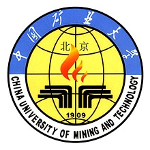

看，这就是我学校的黄昏。。。。。。
中国矿业大学 世界著名的矿业最高学府，教育部直属全国重点大学，国家(首批22所)“211工程”、“985工程”“优势学科创新平台”、“111计划”重点建设高校，全国56所研究生院高校之一。也是江苏全省四所部省共建高校之一，南京大学、东南大学、中国矿业大学和河海大学。设有中国矿业大学（北京）和孔子学院（澳大利亚）。
中国矿业大学通过长期发展和建设，已经形成了以工科为主、以矿业为特色，理工文管等多学科协调发展的学科专业体系和多科性大学的基本格局。
据2014年8月学校官网显示，学校占地面积37万平方米（学院路校区24万平方米，沙河校区13万平方米），总建筑面积52万平方米。学校设有12个学院，设置62个本科专业，有16个一级学科博士点，35个一级学科硕士点，14个博士后科研流动站。学校有学生近15000人，其中研究生6256人，本科生5515人，成人教育本专科生3143人。
校徽：
校歌 ：